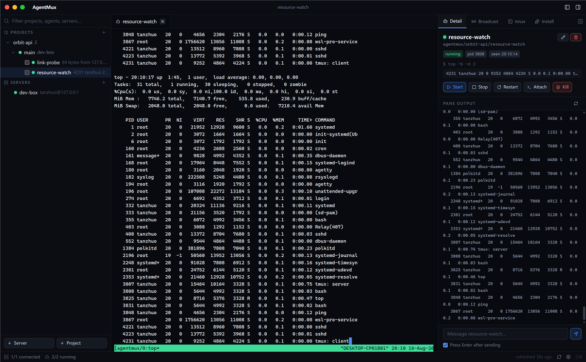
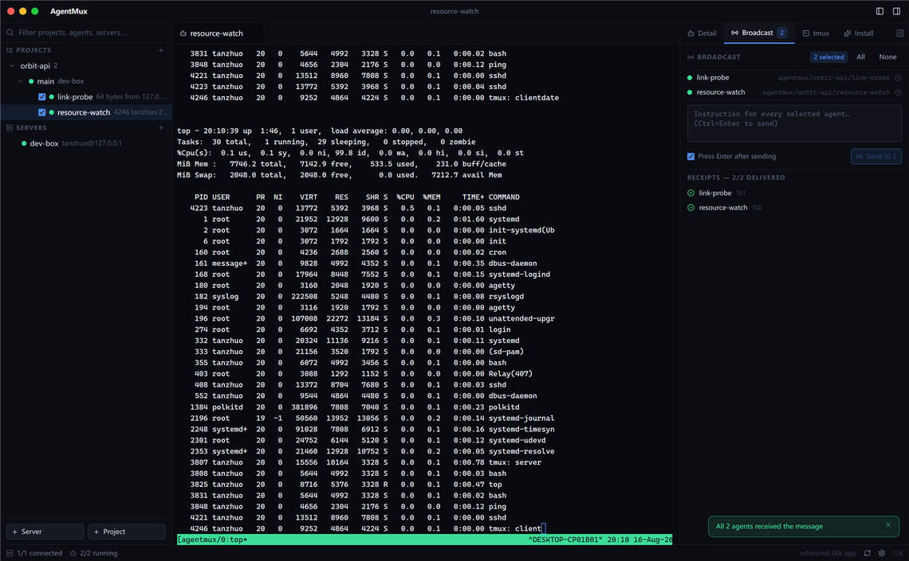
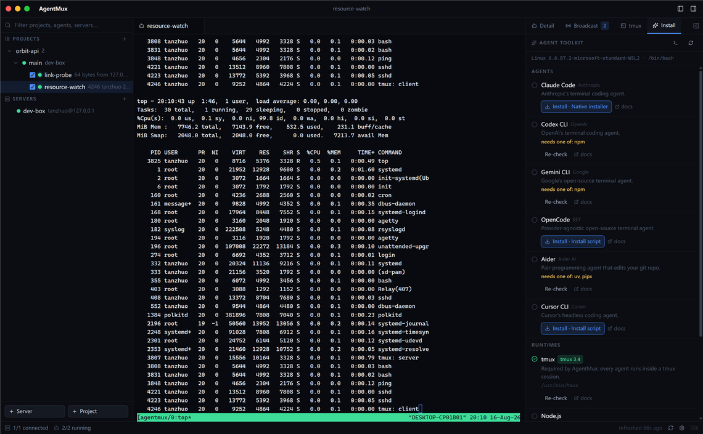
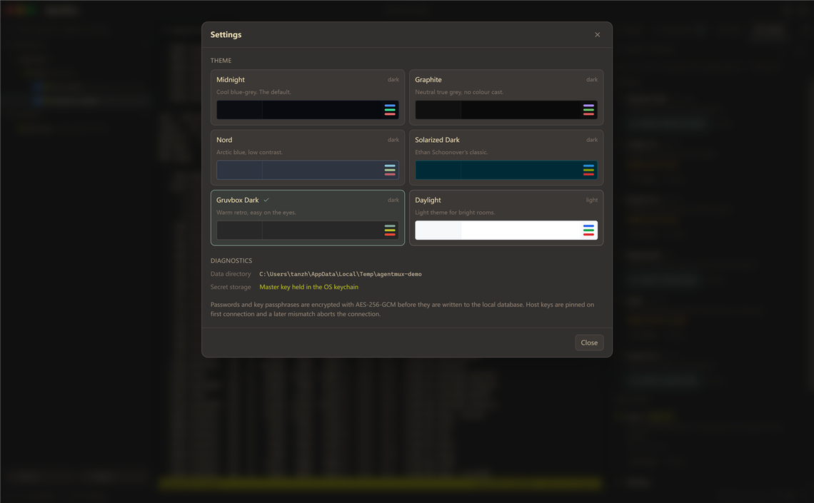

セッションの永続化
クライアントを閉じても、ノートPCをスリープさせても、ネットワークが切れても、エージェントは動き続けます。再び開けば、スクロールバックもそのままに同じペインへ戻れます。4時間かかるマイグレーションが、1本のSSH接続の維持に左右されることはもうありません。
Claude Code、Codex、Gemini CLI、Aiderなどを、ビルドサーバー、GPUマシン、 ステージングホスト、そして手元のPCで運用。各エージェントはホスト上のtmuxセッション内で動作します。 クライアントを閉じても、ノートPCをスリープさせても、ネットワークが切れても — 作業は続きます。
AgentMuxはエージェントのプロセスを所有せず、ホスト上のtmuxセッションにアタッチします。 永続性はクライアントの接続状態ではなく、この構造そのものによって保証されます。
クライアントを閉じても、ノートPCをスリープさせても、ネットワークが切れても、エージェントは動き続けます。再び開けば、スクロールバックもそのままに同じペインへ戻れます。4時間かかるマイグレーションが、1本のSSH接続の維持に左右されることはもうありません。
各エージェントのペインは、色・マウスレポート・選択・検索まで揃った完全なターミナルであり、単なるログビューではありません。タスクの途中で割り込んで軌道修正し、実行を止めることなく制御をエージェントに戻せます。
ターミナル領域は最大9ペインまで分割可能 — ホストをまたぐ3×3のウォールを、それぞれ独立して操作できます。境界をドラッグしてリサイズ、タブをダブルクリックでズーム。レイアウトはウィンドウに追従し、次回起動時に復元されます。
選択した任意のエージェントに1つの指示を一斉送信。各エージェントが受領を示すレシートを返すため、フリートへのファンアウトは「送ったはず」ではなく、監査可能な事実になります。
Ollamaで動くローカルモデルに目的 — たとえばエージェントが停滞した原因の調査 — を渡すと、ツール呼び出しを1つずつ進めます。ホストを変更する操作はすべて明示的な承認まで保留され、スケジュール実行のパトロールは読み取り専用に固定されています。
プロジェクトの事実、好み、エージェントの活動をインデックス化し、語句でも意味でも検索できます。埋め込みはローカルで計算され、データがマシンの外に出ることはありません。既知のパターンに一致する認証情報は、保存前にマスキングされます。
以下はすべて実際のアプリケーションのスクリーンショットです — コンセプト画像は一切ありません。
任意のエージェントのtmuxペインにアタッチ。フルカラー、マウスレポート、検索、選択に対応します。サイドパネルにはプロセスの状態、直近の出力、ライフサイクル操作が並びます。

プロジェクトやホストをまたいで、選択したエージェントに同じ指示を送信。各エージェントが送達確認を返すため、ファンアウトは「届いたはず」から「1件ずつ確認済み」に変わります。

インストールパネルはまずホストを検査し、実際にサポートできるエージェントCLIとランタイムだけを提示します。利用できないものは理由付きで示されます。インストールはtmux内で実行されるため、接続が切れても中途半端なパッケージツリーが残ることはありません。

デフォルトはAppleのシステムパレット。NordやSolarized、ライトテーマを含む6つの代替テーマを備えます。情報密度は長時間の監視セッションに合わせて調整されています。

これらは設定項目ではなく設計上の決定であり、その多くは無効化できません。
パスワードと鍵のパスフレーズはAES-256-GCMで暗号化してから保存され、暗号鍵はOSのキーチェーン（Keychain、資格情報マネージャー、Secret Service）に置かれます。キーチェーンが使えない場合はパーミッション0600のファイルにフォールバックし、その旨がステータスバーに表示されます。
ホストキーは初回接続時にピン留めされます。以降に不一致が起きると、理由の説明とともに接続を中止します — 中間者攻撃によるすり替えが黙って通ることはありません。
シークレットがUIプロセスに渡ることはありません。インターフェイスが知り得るのは「設定されているかどうか」だけで、値そのものは決して見えません。
オーケストレーターが呼び出せるのは固定のホワイトリストにあるツールのみで、各ツールには宣言時に固定されたリスク階層が付きます。実行は、階層・ホストの信頼レベル・実行トリガーを組み合わせた単一のゲートを通過します。
スケジュール実行のパトロールでは、読み取り以外のツールはすべて無条件に拒否され、この制限は設定で変更できません。パトロールは停滞したエージェントを報告できますが、それに対処する権限は持ちません。
すべての実行の全ステップが記録されます — 拒否・却下・未回答のまま残った提案も含めて。リモートの出力はデータとしてマークされてモデルに渡され、指示のように見えるテキストには承認カード上でフラグが立ちます。
作業セッションやネットワーク接続よりも長く続くマイグレーション、リファクタリング、テストキャンペーン。
3台から50台のホストで並行して動くエージェントを、エージェントごとの状態付きの1本のツリーとして表示。
1回の操作でフリート全体に指示を出し、何が届いたかを確認。
インストールコマンドを手で組み立てることなく、新しいホストを稼働状態に。
停滞したエージェントを報告する読み取り専用の定期パトロール — 対処する権限は持たせずに。
プランニング、埋め込み、メモリはローカルで実行。エージェントのモデル通信をプロキシせず、APIキーも読み取りません。
リモートホストに必要なのはtmuxとSSHアカウントだけ — tmuxがなければAgentMuxが インストールできます。手元のPCはさらに簡単で、認証情報は一切不要です。
ドキュメントを読む→リモート：アドレス、ユーザー、そしてssh-agent／鍵ファイル／パスワードのいずれか。踏み台（ジャンプホスト）にも対応。ローカル：名前を付けるだけです。
そのホスト上の作業ディレクトリを指定します。あるいはホストのファイルをブラウズして、その場でディレクトリを追加 — 名前・パス・ホストはすでに分かっています。
名前と起動コマンドを指定します。Startを押せば、ホスト上のtmux内で稼働が始まります。
claude --dangerously-skip-permissionsエージェントへのアタッチ、シェルを開く、CLIのインストール、テーマの変更 — そのすべてへの最短経路です。
Ctrl / ⌘ + Kすべてのファイルに.sha256が付属します。
xattr -dr com.apple.quarantine）。
Windowsでは「詳細情報 → 実行」を選択します。
curl -L -O でダウンロードすれば、macOSの隔離属性を回避できます。
いいえ。目的、プロンプト、リポジトリの規約はすべてあなたのものです。オーケストレーターは調査と提案を行うだけで、ホストを変更する操作は明示的な承認後にのみ実行されます。
各ホストにPOSIXシェルとtmux（tmuxがなければAgentMuxがインストールできます）、リモートホストにはさらにSSHが必要です。手元のマシンはLinuxとmacOSではそのまま利用できます。Windowsでは同じマシンが2つのローカルホストを提供します — tmuxが動くWSLディストリビューションと、ネイティブWindows（PowerShell。内蔵のセッションデーモンで永続化されるため、ウィンドウを閉じてもネイティブの作業は止まりません）。リモートのWindowsホストはサポートされません。
いいえ。Ollama（チャットモデル1つと埋め込みモデル1つ）が必要なのは、ローカルオーケストレーションとセマンティックメモリ検索だけです。なくても、他の機能はすべて利用できます。
いいえ — これは意図的な設計です。エージェントの通信は、ホストから各エージェントCLIに設定されたプロバイダへ直接送られます。AgentMuxはそれをプロキシせず、キーも読み取らないため、コストの集計も予算の強制もできません。
1インストールにつきオペレーターは1人です。状態、認証情報、意思決定ログはワークステーション上に保存されます — 共有サーバーもチームアカウントも中央監査基盤もありません。2人が同じフリートを操作すると、同じtmuxセッションを見ることになりますが、履歴はそれぞれ別に保持されます。
止まりません。ワークスペースやエージェントのレコードを削除しても、消えるのはローカルの記録だけで、tmuxセッションは動き続けます。実行中のセッションを破棄する唯一の操作はKillという名前で、何が失われるかを提示して必ず事前に確認します。